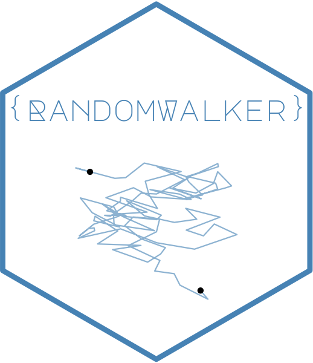
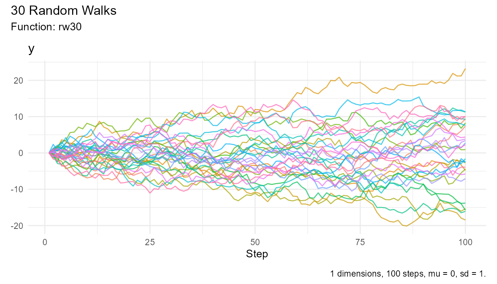

Welcome to the RandomWalker Wiki! This comprehensive guide will help you master the RandomWalker R package for generating, visualizing, and analyzing random walks.
📖 What is RandomWalker?
RandomWalker is a comprehensive R package that provides a unified, tidyverse-compatible interface for generating random walks of various types. Whether you’re modeling stock prices, simulating particle movements, or exploring stochastic processes, RandomWalker makes it easy to:
- Generate random walks from 27+ different probability distributions
- Create walks in 1D, 2D, or 3D space
- Visualize walks with beautiful, interactive plots
- Compute comprehensive statistical summaries
- Work seamlessly with tidyverse tools
🚀 Quick Navigation
Getting Started
- Installation - How to install the package
- Quick Start Guide - Get up and running in minutes
- Basic Concepts - Understanding random walks
Function Guides
-
Automatic Random Walks - Using
rw30()for instant results - Continuous Distributions - Normal, Brownian, Gamma, Beta, and more
- Discrete Distributions - Binomial, Poisson, Geometric, and more
- Multi-Dimensional Walks - Working in 2D and 3D space
Advanced Topics
- Visualization Guide - Creating beautiful plots
- Statistical Analysis Guide - Computing summary statistics
- Use Cases and Examples - Real-world applications
💡 Key Features
🎲 27+ Distribution Types
Generate random walks from a wide variety of probability distributions including:
- Continuous: Normal, Brownian Motion, Geometric Brownian Motion, Beta, Cauchy, Chi-Squared, Exponential, F, Gamma, Log-Normal, Logistic, Student’s t, Uniform, Weibull
- Discrete: Binomial, Discrete, Geometric, Hypergeometric, Multinomial, Negative Binomial, Poisson
- Custom: Define your own displacement functions
📐 Multi-Dimensional Support
- 1D random walks for time series analysis
- 2D random walks for spatial modeling
- 3D random walks for particle physics simulations
📊 Rich Visualizations
- Static plots with ggplot2
- Interactive visualizations with ggiraph
- Support for multiple walk comparison
- Customizable aesthetics
📦 Package Information
- Current Version: 1.0.0.9000 (development)
- CRAN Release: 1.0.0
- License: MIT
- Authors: Steven P. Sanderson II, MPH & Antti Rask
- R Version Required: >= 4.1.0
🔗 External Links
- Package Website: https://www.spsanderson.com/RandomWalker/
- GitHub Repository: https://github.com/spsanderson/RandomWalker
- Issue Tracker: https://github.com/spsanderson/RandomWalker/issues
- CRAN Page: https://cran.r-project.org/package=RandomWalker
📚 Learning Path
If you’re new to RandomWalker, we recommend following this learning path:
- Installation - Install the package
- Quick Start Guide - Learn the basics
-
Automatic Random Walks - Use
rw30()for quick results - Continuous Distribution Generators - Explore different distributions
- Visualization Guide - Create beautiful plots
- Statistical Analysis Guide - Analyze your walks
- Use Cases and Examples - See real-world applications
🎯 Common Use Cases
- Finance: Model stock price movements with Geometric Brownian Motion
- Physics: Simulate particle diffusion with Brownian Motion
- Biology: Model organism movement patterns
- Computer Science: Generate test data for algorithms
- Education: Teach probability and stochastic processes
- Research: Explore theoretical properties of random walks
🤝 Getting Help
-
Documentation: Read the vignettes with
vignette("getting-started")orvignette("home") - Issues: Report bugs at the GitHub Issues page
- Discussions: Ask questions in GitHub Discussions
- Email: Contact the maintainer at spsanderson@gmail.com
Example: Quick Start
Here’s a quick example to get you started with RandomWalker:
# Generate 30 random walks
walks <- rw30()
# View the first few rows
head(walks)
#> # A tibble: 6 × 3
#> walk_number step_number y
#> <fct> <int> <dbl>
#> 1 1 1 0
#> 2 1 2 -1.40
#> 3 1 3 -1.14
#> 4 1 4 -3.58
#> 5 1 5 -3.59
#> 6 1 6 -2.97
# Visualize the walks
visualize_walks(walks)
# Get summary statistics
walks |>
summarize_walks(.value = y) |>
head()
#> Registered S3 method overwritten by 'quantmod':
#> method from
#> as.zoo.data.frame zoo
#> Warning: There was 1 warning in `dplyr::summarize()`.
#> ℹ In argument: `geometric_mean = exp(mean(log(y)))`.
#> Caused by warning in `log()`:
#> ! NaNs produced
#> # A tibble: 1 × 16
#> fns fns_name dimensions mean_val median range quantile_lo quantile_hi
#> <chr> <chr> <dbl> <dbl> <dbl> <dbl> <dbl> <dbl>
#> 1 rw30 Rw30 1 -0.479 -0.677 43.4 -13.4 12.8
#> # ℹ 8 more variables: variance <dbl>, sd <dbl>, min_val <dbl>, max_val <dbl>,
#> # harmonic_mean <dbl>, geometric_mean <dbl>, skewness <dbl>, kurtosis <dbl>Ready to get started? Explore the package documentation and other vignettes to begin your journey with RandomWalker!